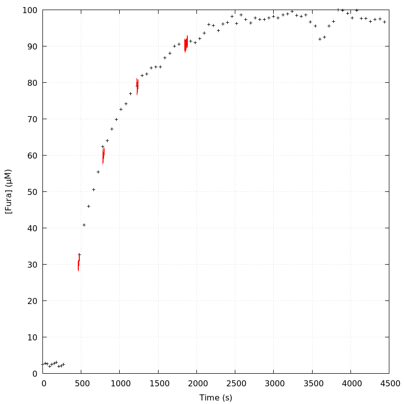

The baseline length is: 7.
When fitting tau against kappa_Fura only the transients for which the fit RSS and the lag 1 auto-correlation of the residuals were small enough, giving an overall probability of false negative of 0.02, were kept (see the numerical summary associated with each transient).
The good transients are: 1, 2, 3, 4.
The time at which the 'good' transients were recorded appear in red.

On each graph, the residuals appear on top. Under the null hypothesis, if the monoexponential fit is correct they should be centered on 0 and have a SD close to 1 (not exactly 1 since parameters were obtained through the fitting procedure form the data.
The estimated [Ca2+] appears on the second row. The estimate is show in black together with pointwise 95% confidence intervals. The fitted curve appears in red. The whole transient is not fitted, only a portion of it is: a portion of the baseline made of 7 points and the decay phase starting at the time where the Delta[Ca2+] has reached 50% of its peak value.
The time appearing on the abscissa is the time from the beginning of the experiment.
Transient 1 is 'good'.
nobs = 172
number of degrees of freedom = 169
baseline length = 7
fit started from point 35
estimated baseline 0.0378067 and standard error 0.00051524
estimated delta 0.0733526 and standard error 0.00178231
estimated tau 3.25205 and standard error 0.13552
residual sum of squares: 165.939
RSS per degree of freedom: 0.981887
Probability of observing a larger of equal RSS per DOF under the null hypothesis: 0.552188
Lag 1 residuals auto-correlation: -0.024
Pr[Lag 1 auto-corr. > -0.024] = 0.601
Transient 2 is 'good'.

nobs = 155
number of degrees of freedom = 152
baseline length = 7
fit started from point 52
estimated baseline 0.0585828 and standard error 0.000881081
estimated delta 0.0638981 and standard error 0.0010527
estimated tau 7.46707 and standard error 0.283033
residual sum of squares: 136.299
RSS per degree of freedom: 0.896702
Probability of observing a larger of equal RSS per DOF under the null hypothesis: 0.814598
Lag 1 residuals auto-correlation: 0.087
Pr[Lag 1 auto-corr. > 0.087] = 0.107
Transient 3 is 'good'.

nobs = 135
number of degrees of freedom = 132
baseline length = 7
fit started from point 72
estimated baseline 0.0800915 and standard error 0.000918754
estimated delta 0.0677632 and standard error 0.00111113
estimated tau 8.35488 and standard error 0.284295
residual sum of squares: 126.058
RSS per degree of freedom: 0.954986
Probability of observing a larger of equal RSS per DOF under the null hypothesis: 0.629351
Lag 1 residuals auto-correlation: 0.081
Pr[Lag 1 auto-corr. > 0.081] = 0.133
Transient 4 is 'good'.

nobs = 161
number of degrees of freedom = 158
baseline length = 7
fit started from point 46
estimated baseline 0.100917 and standard error 0.00080187
estimated delta 0.0627568 and standard error 0.000986153
estimated tau 13.0041 and standard error 0.504556
residual sum of squares: 130.29
RSS per degree of freedom: 0.82462
Probability of observing a larger of equal RSS per DOF under the null hypothesis: 0.94765
Lag 1 residuals auto-correlation: -0.088
Pr[Lag 1 auto-corr. > -0.088] = 0.912
Since the [Fura] changes during a transient (and it can change a lot during the early transients), the unique value to use as '[Fura]' is not obvious. We therefore perform 3 fits: one using the minimal value, one using the mean and one using the maximal value.
The observed tau (shown in red) are displayed with a 95% confidence interval that results from the fitting procedure and is therefore meaningful only if the fit is correct!
No serious attempt at quantifying the precision of [Fura] and therefore kappa_Fura has been made since the choice of which [Fura] to use has a larger effect and since the other dominating effect is often the certainty we can have that the saturating value (the [Fura] in the pipette) has been reached.
The straight line in black is the result of a weighted linear regression. The blue dotted lines correspond to the limits of pointwise 95% confidence intervals.

Best fit: tau = -2.7618 + 0.0644621 kappa_Fura
Covariance matrix:
[ +1.20960e-01, -8.92951e-04
-8.92951e-04, +7.31890e-06 ]
Total sum of squares (TSS) = 632.37
chisq (Residual sum of squares, RSS) = 64.6124
Probability of observing a larger of equal RSS per DOF under the null hypothesis: 9.32363e-15
R squared (1-RSS/TSS) = 0.897825
Estimated gamma/v with standard error: 15.513 +/- 0.65105
Estimates kappa_S with standard error (using error propagation): -43.8438 +/- 5.68704
kappa_S confidence intervals based on parametric bootstrap
0.95 CI for kappa_S: [-50.7583,-35.8668]
0.99 CI for kappa_S: [-52.7969,-33.211]

Best fit: tau = -3.63077 + 0.0675316 kappa_Fura
Covariance matrix:
[ +1.46389e-01, -1.03902e-03
-1.03902e-03, +8.03394e-06 ]
Total sum of squares (TSS) = 632.37
chisq (Residual sum of squares, RSS) = 64.7138
Probability of observing a larger of equal RSS per DOF under the null hypothesis: 8.86299e-15
R squared (1-RSS/TSS) = 0.897665
Estimated gamma/v with standard error: 14.8079 +/- 0.621513
Estimates kappa_S with standard error (using error propagation): -54.764 +/- 6.09847
kappa_S confidence intervals based on parametric bootstrap
0.95 CI for kappa_S: [-61.2509,-46.9312]
0.99 CI for kappa_S: [-63.0965,-44.2471]

Best fit: tau = -4.22176 + 0.0690607 kappa_Fura
Covariance matrix:
[ +1.64786e-01, -1.13146e-03
-1.13146e-03, +8.37977e-06 ]
Total sum of squares (TSS) = 632.37
chisq (Residual sum of squares, RSS) = 63.2162
Probability of observing a larger of equal RSS per DOF under the null hypothesis: 1.87403e-14
R squared (1-RSS/TSS) = 0.900033
Estimated gamma/v with standard error: 14.48 +/- 0.606952
Estimates kappa_S with standard error (using error propagation): -62.1312 +/- 6.41224
kappa_S confidence intervals based on parametric bootstrap
0.95 CI for kappa_S: [-68.6007,-54.8779]
0.99 CI for kappa_S: [-70.4805,-52.1554]
4 out of 4 transients were kept.
sigma(tau): 0.13552, 0.283033, 0.284295, 0.504556
Residual correlation at lag 1: -0.023774248949651692, 0.08717198591871417, 0.08115058883632117, -0.087834441906979
Probablity of a correlation at lag 1 smaller or equal than observed: 0.601, 0.10699999999999998, 0.133, 0.912
RSS/DOF: 0.981887, 0.896702, 0.954986, 0.82462